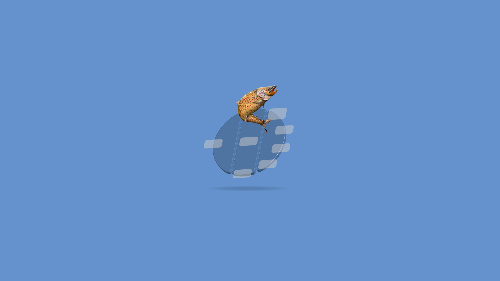
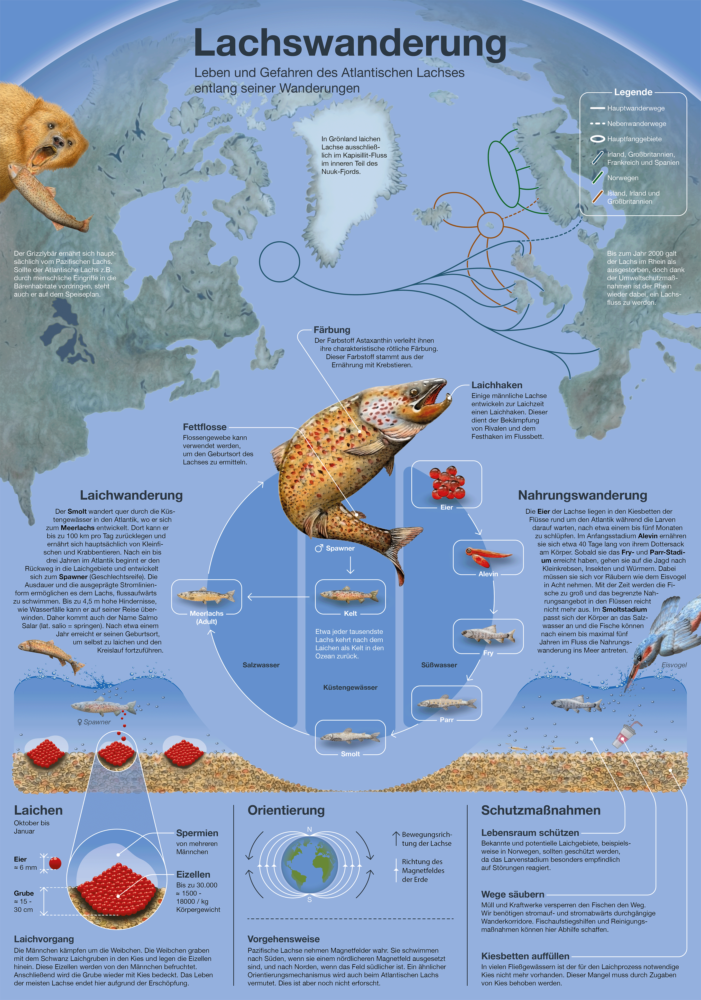
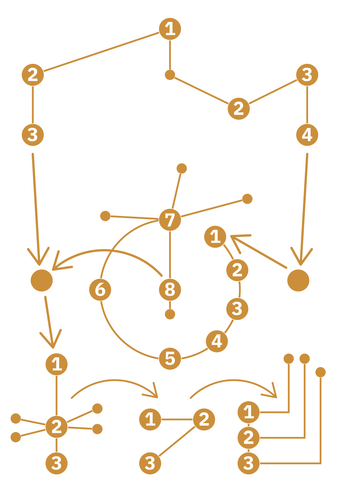
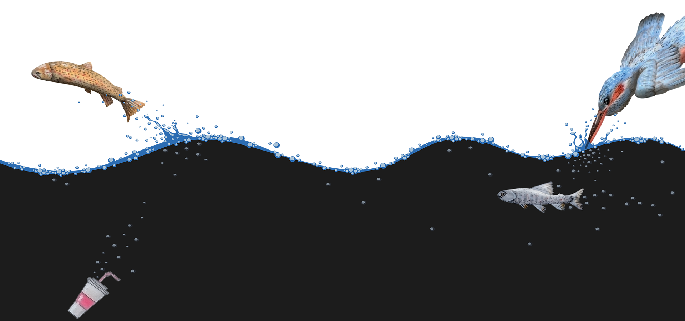
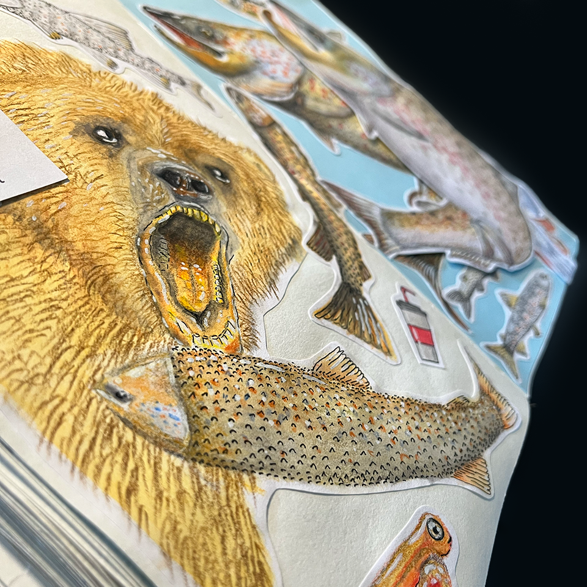
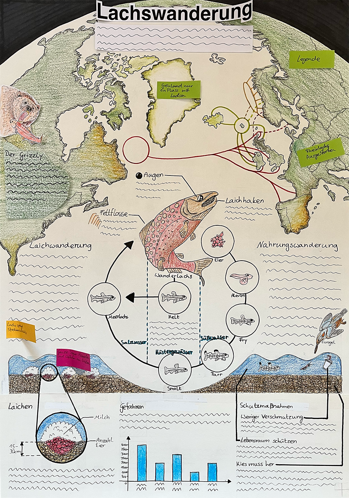

Was?
Erstellung einer Infografik zum Thema »Lachswanderung« im Zeitungsformat (400 x 570 mm).
Für wen?
Projekt im Rahmen eines Seminars an der Hochschule der Medien.
Mit wem?
Die Leistung wurde in Einzelarbeit erbracht.
Wann?
Beginn: März 2024
Ende: Juli 2024
Infografik | Layout | Illustration
Die Infografik »Lachswanderung« visualisiert das Leben und die Gefahren eines Tieres, das die meisten Menschen nur als Nahrungsquelle kennen.
Trotz der hohen Informationsdichte soll die Infografik schnell erfassbar sein und eine Geschichte erzählen.

Layout & Blickführung




Angewandt wurden die vier Schritte zur Infografik nach Stefan Fichtel (2022): das Ideenscribble, das Inhaltsscribble, der Designentwurf und die finale Abnahme.
Quelle: Fichtel (2022)